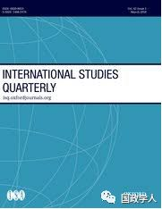
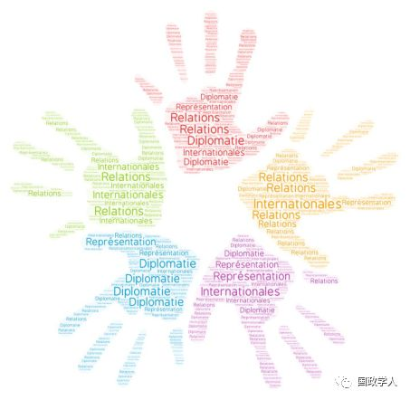
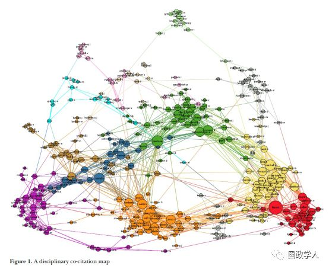

收录于合集
简 介
【作者】 Peter Marcus Kristensen是哥本哈根大学政治学系副教授，主要研究国际关系学科的社会学、国际关系的文献计量学研究、国际关系中的非西方理论与视角。
**【 编译】**周雨橙
【审校】 高嘉琳、扎西旺姆
【来源】 International Studies Quarterly 2018. 62(2): 245-259
【期刊】 国际研究季刊（International Studies Quarterly, ISQ）是国际研究协会（ISA）的旗舰期刊。它致力于出版国际研究领域中学界领先的重要理论性、经验性、规范性议题，该期刊发行的文章对众多国家的政治、经济、社会及文化发展皆有所启发。

国际关系的终结：一种社会学剖析
International Relations at the End：A Sociological Autopsy
内容提要
近年来，国际关系学（以下简称国关）似乎已从“大理论”和“大辩论”迈向中程理论构建和定量假设检验（quantitative hypothesis testing）。与此同时，学者们认为该领域正在碎裂化，并各自为阵。本文作者借鉴科学社会学研究以分析这类主张，通过网络分析方法（network analytical methods）来剖析国关的学科结构：处主导地位的几个阵营、彼此之间的关系以及其在学科内的相对角色。本文以理论描述为主，方法和次领域为辅，归纳出若干引文阵营。现实主义、自由制度主义以及建构主义三大阵营继续占据着国关学科的中心地位。这三种主义可被视为不同的社群，不过彼此交织和交互影响的程度其实高于碎裂化论文所暗示的情形。此外，有三个与建构主义有所联结的理论阵营：后结构主义、英国学派以及新马克思批判理论。理论研究之外，本文亦发现两大有关形式模型、方法论、国际和国内冲突定量研究的阵营。从整个国关学科的范围来看，关于大理论化和定量假设检验的文献被引用得最多，不过仍旧是理论阵营，尤其是三大主义，赋予了国关学科有别于他者的社会学结构。

1
从终局开始
**（Beginning at the end） **
国关历经了三次根本性改变： 一是核心理论的衰退；二是 简单 化、方法驱动型的假说验证 占主导地位 ；三是过去塑造整个学科的大辩论已显疲弱 。多数研究赞同上述三股趋势，也同意国关正在逐渐碎裂化，但针对造成这种现状的原因究竟是大理论和大辩论的结果，还是两者式微的结果，尚未有所定论。
本文作者认为上述辩论大多出于高阶学者的个人经验，因此欲另辟蹊径，通过科学社会学理论和科学计量数据来剖析所谓“国关的终局”：大理论和主义不再紧握对学科结构的控制了吗？理论和定量假设检验之间的相对平衡为何？国关有分隔成不同阵营吗？如是，应如何描述它们（例如通过经验主题、方法论、认识论、中程或是大理论的观点）？不同阵营间在何种程度上彼此没有交集，或是我们可以看到他们之间的关联吗？本文拟用共被引分析（co- citation analysis），将国关中的互动网络视觉化，以解答上述问题。
本文分成四部分：一、介绍引文分析法并呈现数据和网络视觉化图像。二、呈现理论架构解释引用实践。三、聚焦三个主题：理论的终局、定量假设检验的兴起、更广泛的碎裂化论点，用以分析学科的引文网络。四、讨论引文分析的意义。
2
方法（Methods）
社会学中研究学科结构和分化的主要方法大致分为三种：
A. 研究教学学科
B. 考察学者的主观认知
C. 期刊出版品的文献计量学研究，这同时也是最普遍被使用的方法，近来这种方法已经转向引文分析。
本文主张引文分析可以对国关学科内整合和碎裂的社会学结构提供一些洞见，而引文网络分析（citation network analysis）不仅可以让我们研究何者为主要阵营，也可以让我们得知他们在学科内的关系定位。就具体方法而言，本文通过作者共被引分析（author cocitation analysis），即最常被引用的作者们同时出现在同一参考文献中的频率，来剖析国关的社会学结构。
本文中作者引文的数据主要来自2011年至2015年在Web of Science中被归类为国际关系学的106本期刊中的研究文献。由此构成的数据库中包括712,406笔引文，而这些引文出自于245,636位不同的作者。同时，本文也从时间、学科、地理与语言、引用来源、作者级别等面向描述和解释了数据的筛选标准及其限制。
图像视觉化处理

**3
**
引文实践的社会学理论
** （Sociological Theories of Citation Practice）**
对于“何为引文以及人们为何引用之”的问题，社会学的理论解释总体上分成三类：规范理论（normative theory）、象征理论（symbolic theory）、建构者理论（constructivist theory）。作者以此三者为基础发展出一个解释架构以分析国关的引文网络。
A. 规范理论：引用作为一种品质保证，亦即理论预期高引用率的作者，他们作品的内在品质较为被认可。该理论预期，构成共引社群（co-citation communities）的成员是一群在实证领域或专长方面认知相连的作者。
B. 象征理论：引用作为一种立场代表，既不纯粹出于引文作者的论文品质，也不纯粹是一种盲目的崇拜。亦即理论预期高引用率的作者是代表一种特定的概念象征。例如，引用Wendt作为整个建构主义的代表。该理论预期这个共引社群的构成，会是同样或类似具有某种代表性身份的作者。
C. 建构者理论：引用作为一种工具性的说服，亦即理论预期高引用率的作者是那些社会地位较高或名声在外，最具说服力的名人。引用他们的作品并不意味着已通篇一览，引用意图甚至可能离原文所要表达的本意相去甚远，但仍旧因其名而引之，有不同目的的工具性。该理论预期这类共引社群会是同样大名鼎鼎的作者，但是不见得对文章有明显的认知关系，更像是一堆“著名”文献的集合，为表具说服力而引用。
**4
**
剖析国际关系
** （dissecting international relations）**
基于上述三种理论来剖析国关，并不是为了验证理论之间相互对立，而是为了更理论、有根据的分析国关及其引文阵营。首先，本文通过规范理论来强调实质上存在认知关系的联结，表现在国内战争（红色）、国际战争（黄色）发展和恐怖主义（灰色）、国际政治经济学（粉色）、贸易（鲜绿色）、规范/政治理论（米色）、国际关系与国际法（绿色）、国际安全（橙色和紫色）；其次，象征理论用以解读阵营地立场或是隶属的主义，现实主义（橙色）、自由主义（绿色）、建构主义（蓝色）、英国学派（褐色）、后结构主义和批判安全研究（紫色）、新马克思主义（青色）。存在重叠的部分可同时适用于规范理论和象征理论的解释。建构者理论的部分未在图像中显示，不过下文仍有针对于此的分析。
**5
**
大理论和主义的终局？
** （The End of Grand Theories and Isms？）**
从图像中可以看到，大理论和主义依旧健在， 并且主导整个网络。从象征理论的角度来看，三大主义不仅是“典范之战”的概念性象征，也可被看作是有所区别的共引社群。美国的三大主义（包括其各自下属的子领域）以三足鼎立之姿，占据理论中心，并且与位于图像中左边的几个欧洲理论连结较多，它们分别是英国学派、规范/政治理论、新马克思批判理论、后结构主义、批判安全理论。此外，本文也发现一些专门的研究，存在理论阵营的重叠或本身分裂出两种不同路径的情况，例如安全研究、国际政治经济等。总体而言，这一节使我们观察到，大理论仍是这门学科中最具吸引力的部分，不过我们也发现位于图像中边缘位置的社群较不拘于主义限制。以下将根据上述三个理论就不同理论阵营做简要分析。
• 现实主义：为最大的阵营。主要在本体论和实证领域（例如安全和冲突），以及目前针对亚洲地缘政治和崛起中的强权，尤其是对中国的研究上认知较为一致。但是在方法论、 理论的变化甚至理论的立场上相当不一致。另外，现实主义阵营也并非唯一致力于安全和冲突研究的集群。因此，无法用规范理论单独解释。象征理论的解释则较为合理：引用者通过引用现实主义派别作者的论述以表立场及其主义归属。就不属于该阵营的引用情况来看（外部立场），沃尔兹（Waltz）、米尔斯海默（ Mearsheimer）、吉尔平（Gilpin）、摩根索（Morgenthau）等人最容易被引用来当作反对阵营的代表。就属于现实主义阵营的情况而言（内部立场），现实主义的作者们虽也会被一起引用，不过这是为了表示这个阵营内存在的不同立场，例如属于古典现实主义还是新现实主义。就建构者理论的角度来看，现实主义社群由美国男性学者主导，大部分位于美国东北部，而《国际安全》（International Security）和《安全研究》（Security Studies）两本期刊引用现实主义派学者文献最多。
• 自由主义：为第二大阵营。从规范理论的角度看，集中在合作、整合和制度化方向。该主义和现实主义一样在方法论上存在分歧，分布在图像中左边的多为“大型”自由主义理论的论述，分布在右边的则更多是经验定量检验，例如人权、合作、经济发展、政治机制、以及国内/国际冲突主题。象征理论同样强调的是内、外部的立场性。就外部而言，与现实主义的连接，主要是经由新自由制度主义（代表作者Keohane）以及其他建制论者（代表作者Krasner，Drezner，Young等人）的概念象征，它们介于现实主义和自由主义之间，不过自身有一定的规范。内部而言，正式国际组织的理性设计、建制复杂性和转移的动态、国际法的辩论等，与其他主义或阵营的连结较少，与自身同领域的连结相对更高，显示其更为专业化。欧盟研究有其专业化的一面，不过也可以看到内部象征不同立场的一面，例如自由政府间主义（代表作者Moravcsik）、新功能主义（代表作者Haas）、交互影响主义（代表作者Deutsch）、政府间主义（代表作者Hoffmann）等。就建构者理论的角度来看，被引用作者主要在美国，该阵营的女性作者相比于现实主义阵营多，《国际组织》（International Organization）和《国际研究季刊》（International Studies Quarterly）两本期刊引用最多，会被欧盟和国际法类期刊视为具有说服力的著名人物。
• 建构主义：从规范理论的角度来看，几乎没有实质和经验上的同质性，因此缺乏较具解释力的部分。从象征理论的角度看，建构主义的概念象征是Wendt，他同时也和新自由制度主义、现实主义、英国学派、后结构主义连结至深。建构主义处在实证主义/理性主义与反思主义/后实证主义的中间地位，因此分布上更为松散，甚至可观察到以Wendt为中心分化成两部分。主流建构主义大致分布在Wendt右边，最接近新自由理性制度主义，但与其亦有不同之处。分布在Wendt周围的部分，焦点多集中在以国家为中心的互动、社会化、学习三种过程，以及结构- 代理人问题。而分布在Wendt左边的立场上多属于批判型建构主义，与后结构主义有连结。就建构者理论来看，内部的分裂与位于欧洲还是位于美国的建构主义者有所呼应。《国际研究评论》（Review of International Studies）、《欧洲国际关系期刊》（European Journal of International Relations）、《千年》（Millennium）三本期刊引用最多。
• 后结构主义：从规范理论的角度看，同样几乎没有较具解释力的部分，勉强符合的是它们在代理人、语言和知识政治上有共同的认识论基础。从象征理论的角度看，这个阵营内有一象征立场是批判欧洲安全研究（哥本哈根、亚伯、巴黎三个学派），另一大象征立场则是女性主义者和后结构主义哲学家。从建构者理论的视角看，性别分部较为均等，由欧洲学者主导，《千年》（Millennium）、《安全对话》（Security Dialogue）、《国家政治社会学》（International Political Sociology）是它们的主战场。
• 英国学派：从规范理论的角度看，较具解释力的部分集中在国际社会的规范和建制（的历史性演变），本质上是研究一些维持国际社会、国家间关系有序与合法性的根本性机制。此外，还有一些处于较为边缘的研究，例如人权、人道干预以及保护责任。从象征理论的角度看，多元主义（代表作者Bull ，Wight，Jackson）和连带主义（代表作者Wheeler，Dunne）处于网络的中心，且常被共引。从建构者理论的视角看，顶级的盎格鲁研究机构（包括澳大利亚）（ Anglo -institutions）中的男性学者占压倒性的主导地位，对《国际研究评论》（Review of International Studies）、《国际政治》（International Politics）等众多欧洲期刊的读者颇有影响力。
• 新马克思批判理论和国际政治经济学：较前者而言，新马理论更分离于主流网络，从规范理论的角度看，新马本质的连结集中在国际政治经济学（下简称国政经），区别于其他研究国政经的集群，新马国政经的实际特征表现在它的批判解放。从象征理论的角度看，其内部也存在不同立场，例如新葛兰西批判理论、马克思和历史唯物主义、世界体系理论、新托洛茨基主义理论、国际历史社会学等。新马克思主义与外部连结的范围较广泛而分散，以国政经为主，大致上可分为不列颠学派（British School）和美国学派（American School）。
**6
**
定量假设检验已接管了这门学科吗？
** （Has Quantitative Hypothesis Overtaken the Discipline）**
本研究无法确认定量假设 检验阵营是否随时间推移已蚕食到“主义”阵营的版图，不过可以确认二者彼此分离并存于该网络中，而处主导地位的是理论的部分。当然，这个区别并不是清晰划分的，“主义”阵营并不一定是纯理论的；形式理论即便不算是一种“主义”，依然属于理论；而定量假设检验未必去理论化。
然而，共同主导图像最右端的两个阵营的确不属于理论，而属于方法论和经验论：它们将定量方法和形式理论应用在国际和国内冲突主题，这极大的支持了规范理论的解释。研究方法上，其大部分集群都采用统计研究和形式模型。在经验研究上也更具同质性，主要集中于国家内或国际间爆发冲突与否的因果关系。不过随着研究的深入，它们之间也有所分化，形成阵营内不同的立场，而这部分提供了支持象征理论的依据。从建构者理论的角度来看，这类定量假设检验的集群倾向于引用不同著名机构的作者，引用文章多于书籍，引用比较论学者、方法论学者和经济学者多于国关学者。如此引用以突显其文章颇具专业性，便于被《冲突化解期刊》（Journal of Conflict Resolution），《和平研究期刊》（ Journal of Peace Research）,《冲突管理与和平科学》 （Conflict Management and Peace Science）,《国际互动》 （International Interactions）, 《国际研究季刊》（International Studies Quarterly）等期刊接受。同时这也表明，定量假设检验虽未主导整个学科，但也有主导特定领域研究。
**7
**
大辩论终结时会迎来碎裂化吗？
** （Fragmentation at the End of Great Debates？）**
从测量的系数来看，的确有多个阵营出现自成一派的现象，所谓自成一派是指这些阵营在自己的集群内相互连结程度较高，例如贸易主题的阵营。
不过，本文亦发现仍有不少阵营与外部其他阵营被共同引用，连结甚密。本文认为，上述情况的解释无非两种，若不是因为辩论与关系立场的选择，就是因为“分形”（fractal）的区别。
从辩论与关系立场选择的角度看，本文发现Keohane，Waltz，Wendt所提出的大理论对于捆绑整个国关学科起到至关重要的作用。它们所代表的概念象征是一股整合整个学科的力量，而不是造成碎裂化的力量。除此之外，本文亦发现存在两个不同阵营联系尤其紧密的情况，例如新现实主义和新自由制度主义之间的“双新争论”（neo- neo debate）。
若从“分形”的角度来解释，这些不同阵营之间的共引情况其实可以被理解为一种构建于两者之上的混合体，也就是一种分形连续体的概念，无法找到所谓清晰的“主义”分界，由此产生相对的意涵，例如Onuf比Finnemore“更建构主义一点”，但比Weldes“建构主义得少一点”。因此，所产生的网络虽然看起来似乎是大辩论的分化，但其实是各“主义”下的分形“微立场”（micropositioning）。另外还有一种可能，一些作者之所以看起来作为不同阵营间的连结者，并不是由于他们作为概念象征，而是因为他们什么都写，作品多种多样。
综上而言，从整个学科的范围来看，有一些不同阵营之间的连结因为定量- 数理化方法变得更为紧密，这种情况应该被视为定量化或数理化的现实主义或自由主义正逐渐形成，而不是反对原本现实主义或自由主义的其他立场。因此通过本文的网络分析可以确认，总体而言，分化产生在理论型研究与定量模型研究之间，但后者不一定会接管国关。
**8
**
结论和意义
（Conclusions and Implications）
专业上的意义：我们可能没有意识到自己是为了什么理由在引用文献，但若能更具意识的引用文献，甚至更具目的性的引用文献，或许对写作、投稿会有所助益。其次，也可以反映出部分编辑或是评论人的偏好或偏见。
评价的意义：目前的评价体系基于效率考量，高度依赖引文分析，例如基于学者的评级或研究的品质等，但显然其引文可能具备不同的目的性，如欲以此作为评价标准，则应更细致的去探讨此引文是否确实出于学术目的，或仅是出于政策影响力的考量。
社会学上的意义：本研究证明国关在政治学领域内属于一个独立的学科，三大主义为核心的特征也令其区别于其他政治学学科。在研究方法上的确各自为营，不过彼此之间并不是完全自我封闭的体系。从研究结果中看到，以大型理论和定量模型为出发点的阵营分属在不同的共引模式下，在国关学科内扮演不同的角色，典范间的立场选择和辩论其实让国关整体的联系更为紧密。理论主宰着国关学科的上层结构，不过定量假设检验和中程理论扮演的角色可能会越来越重要。因此，根据大理论和主义、大的认识论以及方法论上的辩论去教授国关并无不妥。此外，这也引出一个被广泛提及的讨论：规范理论认为引文分析更为客观合理，而且可以向学生或是年轻学者公开，以便他们熟悉整个国关结构的大致情形。建构者理论和象征理论则持相反意见，认为引文分析只是简单的呈现一个所谓“真正”的学科结构，这样做会忽略科学的内容，隐藏引文时的不同形式和其含糊之处，并因强调已有成果的科学而忽略“正在进行中的科学”。
_ ** 官网 链接：**_
https://academic.oup.com/isq/article/62/2/245/4992077
** 本文由国政学人微信平台独家编译首发**
更多阅读
【重磅速递】约瑟夫·奈：美国霸权的兴衰：从威尔逊到特朗普 | 国政学人
【重磅推荐】巴里·布赞：英国学派视角下的中国崛起 | 国政学人
【重磅速递】米尔斯海默：注定失败：自由主义国际秩序的兴衰 | 国政学人
【美国研究】IS杂志：为何美国的外交大战略如此稳定？| 国政学人
【英国脱欧】以欧盟为核心的多中心外交：脱欧后英国的欧洲外交战略 | 国政学人
【民族主义】江忆恩：中国的民族主义正在高涨吗？基于对北京群众的调查 | 国政学人